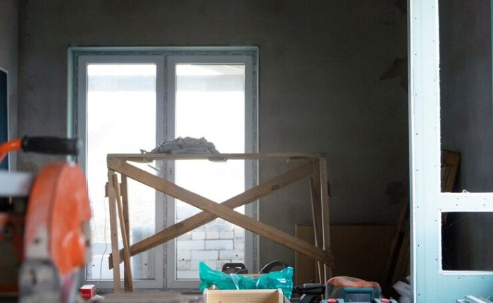

How Long Does It Take to Build or Renovate a Villa in Dubai? A Realistic Guide to UAE Villa Timelines
You've probably heard someone say their villa took six months to build. You've also probably heard someone else say theirs took three years and they still don't have a completion certificate. Both of those stories are true, which tells you something important: in Dubai, villa timelines vary enormously, and most of the difference comes down to planning and oversight rather than luck. This guide gives you honest, realistic timelines for every stage of a Dubai villa build or renovation, and explains exactly what tends to go wrong along the way.
KEY TAKEAWAYS:
- Building a new luxury villa in Dubai typically takes between 18 and 36 months from the first design meeting to handover, depending on size, complexity, and how well the process is managed.
- Authority approvals in Dubai, including Dubai Municipality permits, master developer NOCs, and DEWA connections, are often the longest lead-time items and must be planned for from day one.
- The design and pre-contract stage alone takes three to nine months on a luxury villa project before a single brick is laid.
- Scope changes mid-construction are the most common cause of programme overruns in UAE villa projects, often adding months to an otherwise realistic schedule.
- A professionally managed project with a structured programme and early approval submissions consistently completes faster than one managed informally.
- Renovation timelines depend heavily on the extent of MEP works involved. Cosmetic renovations take weeks; full MEP replacements take many months.
- The best time to think about your timeline is before you appoint your architect, not after your contractor has already started on site.
So How Long Does It Actually Take? Here's the Honest Answer
The honest answer is: longer than most contractors will tell you upfront, and shorter than the worst-case stories you've heard from friends. For a new-build luxury villa in Dubai, think 18 to 30 months for a well-managed project, and up to 36 months or beyond if approvals are delayed or the scope keeps changing mid-construction.
For a full villa renovation, the range is wider and more variable. A cosmetic refresh with no structural or MEP changes can be done in eight to twelve weeks. But strip the walls, touch the air conditioning, rewire, and re-plumb, and you're looking at six to twelve months minimum, sometimes considerably more. The trouble is that many owners start with a "light renovation" in mind and discover once they're into it that the MEP needs a full overhaul anyway. That decision point, made mid-project, is where timelines double.
For credible luxury villa project management in Dubai, the first thing we do is build a realistic programme before any other decision is made. Not an optimistic one. A realistic one.
What Are the Main Stages, and How Long Does Each Take?
People often think of construction as the project. In reality, construction is about half the total timeline. The stages before and after it take longer than most people expect, and they are where most delays originate.
Stage 1: Design and Documentation (3 to 9 Months)
This is the stage that surprises people most. Appointing your architect, developing the concept, going through design iterations, producing structural and MEP drawings, and getting everything to a standard that can actually be tendered and approved: all of that takes time. On a straightforward villa, budget three to four months. On a complex or large villa with bespoke architectural features, a basement, or a demanding brief, six to nine months is realistic.
The temptation here is to rush the design so you can "get started." Resist it. Incomplete drawings are the single most reliable way to guarantee cost overruns and programme extensions during construction. For cost planning and feasibility in villa construction, the design stage is where your budget and your timeline are fundamentally shaped. Cutting corners here costs far more later.
Stage 2: Authority Approvals and Permits (2 to 6 Months)
This is the stage that catches most overseas clients completely off guard. Before construction can legally begin on a Dubai villa, you need building permits from Dubai Municipality, a No Objection Certificate from your master developer (Emaar, Nakheel, Meraas, or whoever manages your community), and various other authority submissions depending on your plot and scope.
These processes run in parallel with late-stage design, but they take time regardless of how organised you are. Two months is the optimistic end. Four to six months is common. And that's assuming your drawings are complete and correct when submitted, because resubmissions after authority comments add weeks each time.
The critical point here is that approvals cannot be rushed by spending more money. They have their own pace. The only thing you can control is submitting early, submitting correctly, and following up consistently. This is one of the most valuable things a local Owner's Representative in Dubai does on your behalf.
Stage 3: Tendering and Contractor Appointment (1 to 3 Months)
Once drawings are complete and permits are in hand or close to being issued, you need to select and appoint your contractor. A proper tender process, issuing documents to three or more prequalified contractors, allowing adequate time for them to price, holding clarification meetings, evaluating returns, and negotiating a contract, takes six to twelve weeks at minimum. Rushing this stage produces a poorly priced contract with gaps that become variations. And variations, as we'll come to, are where programmes fall apart.
Stage 4: Construction (10 to 22 Months)
This is the stage everyone pictures. And it is indeed the longest single phase, but it varies enormously based on villa size, specification, and how well the preceding stages were managed. A compact 650 sq m villa with a straightforward specification can be built in ten to fourteen months. A 2,000 sq m ultra-luxury villa with a basement, bespoke finishes, and full smart home integration is realistically eighteen to twenty-two months of construction, even with a well-organised contractor.
The table below gives honest construction programme benchmarks for Dubai villa projects in 2026:
| Villa Type | Approximate BUA | Construction Programme | Total Project Timeline |
|---|---|---|---|
| Standard Luxury Villa | 650 – 1,000 sq m | 10 – 14 months | 18 – 24 months |
| Mid Luxury Villa | 1,000 – 1,800 sq m | 14 – 18 months | 22 – 28 months |
| Ultra Luxury Villa (with basement) | 1,800 – 3,500+ sq m | 18 – 24 months | 28 – 36 months |
| Cosmetic Renovation | Any | 8 – 14 weeks | 3 – 5 months (inc. design) |
| Full Villa Renovation (inc. MEP) | Any | 5 – 9 months | 8 – 14 months |
Stage 5: Handover, Snagging, and Completion Certificate (1 to 3 Months)
People often forget this stage exists until they're in it. After the contractor declares practical completion, there is a snagging period during which defects are identified, listed, and remedied. There are also final authority inspections, utility connection activations, and the agreement of the final account with the contractor. On a well-run project, this takes four to eight weeks. On a poorly managed one, snagging alone can drag on for months because the defect list is too long, or the contractor's attention has already moved to their next job.
What Causes Villa Projects in Dubai to Run Late?
This is the question worth spending time on, because understanding the causes is the only way to avoid them. In our experience across Palm Jumeirah, Emirates Hills, Dubai Hills, and beyond, late projects almost always come down to one or more of the same recurring issues.
Incomplete drawings at tender. When the contractor prices against drawings that are not fully co-ordinated, they make assumptions. Those assumptions get resolved as variations during construction. Each variation takes time to price, review, and approve. Multiply that by fifty or a hundred variations over an eighteen-month build, and you can see where weeks disappear. For proper contractor selection and tendering in Dubai, complete documentation is not optional. It is the foundation of a realistic programme.
Approval delays from resubmissions. Authority submissions that come back with comments, because drawings were incomplete or non-compliant, can add two to four months to the pre-construction period. Getting this right first time requires an architect and consultant team that knows Dubai's specific submission requirements.
Scope changes mid-construction. You've decided to add a home cinema. Or change all the bathroom layouts. Or extend the pool. These decisions, made after construction has started, trigger a chain of changes to MEP, structure, finishes, and programme. Each one takes longer than the client expects. Taken together, they are the most common reason a project scheduled for fourteen months takes twenty-two.
Contractor resource issues. A contractor juggling multiple sites will not maintain the labour levels your project needs during their busy periods. Without a project manager actively monitoring and challenging resource levels, this tends to be discovered late rather than early. For quality and progress monitoring on villa construction sites, weekly resource checks are a standard part of the oversight process.
Payment disputes. When clients and contractors disagree over payment valuations, work tends to slow while the dispute is resolved. Milestone-linked payment structures, independently certified, prevent most of these disputes from arising in the first place.
How Does Professional Project Management Protect Your Timeline?
Think of your construction programme like a flight path. The destination is fixed. But without someone actively monitoring the route, responding to deviations early, and making corrections before they compound, small delays turn into significant ones before anyone notices.
A project management team in Dubai protects your timeline in three specific ways. First, by submitting authority applications as early as possible, often during late design rather than after it is complete, to run approval processes in parallel with the final design stages. This alone can save two to three months on the overall programme. Second, by enforcing a structured variation control process that requires changes to be instructed, priced, and approved before work proceeds. Third, by monitoring contractor progress weekly against a detailed baseline programme and raising early warning notices the moment a delay is detected, while there is still time to recover it.
Research from the Project Management Institute found that projects with dedicated programme management were 2.5 times more likely to be delivered on time than those without structured oversight — Source: PMI Pulse of the Profession, 2023. On a villa project where every extra month in construction means another month of contractor costs, consultant fees, and delayed occupation, that statistic has a direct financial value.
Renovation Timelines: What's Different?
Renovation projects in Dubai have one major variable that new builds don't: you often don't know exactly what you're dealing with until the walls come down. Hidden MEP conditions, concealed structural issues, and undocumented previous works all have the potential to extend a renovation programme beyond what was originally planned.
The best protection against this is a thorough pre-renovation survey before any design work is finalised. Understanding the actual condition of the existing MEP systems, the structural configuration, and any previous alterations to the villa allows the design and programme to be built on reality rather than assumptions. For detailed guidance on what this involves, our guide on the hidden importance of MEP in UAE villa renovation covers the specific risks and how to manage them before they affect your programme.
What Should You Do Before You Start?
If you're at the planning stage, here is what makes the biggest difference to your final timeline:
- Appoint your project manager or Owner's Representative before anyone else. They should be the ones managing the design team appointment, not the other way around.
- Build a full project programme covering design, approvals, tender, construction, and handover before you set any target move-in date. Work backwards from a realistic completion, not forwards from a hoped-for start.
- Submit authority applications as early as possible. Your consultant team should be preparing NOC and permit submissions during the design stage, not after it.
- Finalise your brief before design starts and commit to it. Every change made after design is complete costs more time than it would have cost to get right the first time.
- Choose a contractor through a proper tender process managed by your project manager, not based on a recommendation or the lowest quote. A well-qualified contractor with realistic resources delivers faster, not slower.
The Bottom Line on Dubai Villa Timelines
There's no magic answer to how long it takes. But there is a realistic one. A new-build luxury villa in Dubai, properly planned and professionally managed, takes between 18 and 30 months from first design meeting to handover. A full renovation takes 8 to 14 months. A cosmetic refresh is closer to 3 to 5 months.
What pushes projects beyond those ranges is almost always predictable: incomplete drawings, rushed approvals, scope changes, and insufficient contractor oversight. None of those things are inevitable. They are all manageable with the right structure in place from the start.
"The biggest timeline mistake we see is owners setting a move-in date before the design exists. Build the programme first. Then set the date."
If you're trying to work out a realistic schedule for your villa project, contact Tanmu Project Management Services for a free initial consultation. We'll help you build a programme that is actually achievable, rather than one that looks good on paper and falls apart on site.